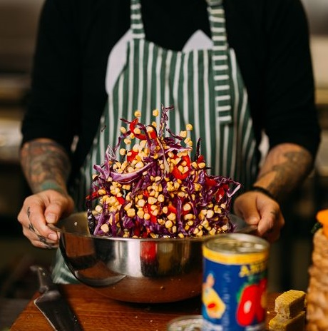

META Foods
A Focus On More Than Just Food
What is META Foods? A quick overview.
"A focus on more than just food" is what META Foods is all about. Today, more than ever we are scraping for more minutes in the day after work and before bed to spend more time with our families and decompress. While many of us, myself included, find cooking very relaxing and fulfilling, often it is the last thing we want to do at the end of what was potentially a long day. This feeling of "I have to cook tonight" is no doubt heightened when it's a mammoth task to find something everyone in your house will not only eat, but will nourish and sustain them. This is where META Foods comes into the picture, providing everyone from all walks of life a means of easily having affordable, delicious and healthy meals every night of the week. The cooking is still up to you (we aren't quite there yet) but we have taken care of doing all of the thinking for you when it comes to meeting your entire families dietary requirements, health goals and taking grocery shopping out of the equation while still supporting your local supermarkets.
The who and the why. Our Motivation.
As a father who has some fairly strict dietary requirements and a desire to try and eat healthy along with a young son who needs a large variety of different food to help his growth and developement, I believe there is a gap in the market where convenient, affordable and accessible meals are concerned. When it comes to easily meeting the "food needs" of a family or yourself this is especially true with busy lives involving work, hobbies and family. Services like "Hello Fresh" and "Dinnerly" seek to streamline the process of finding a recipe, grocery shopping, food preperation and cooking. They do succeed with making this easier but they do not allow for a lot of variation to meet different needs within a single order and (at least for me peronsally) these are not financially lucrative for a whole family. This application seeks to take food from an idea to your plate using local super markets and good old fasioned family cooking combined with industry knowledge to bring you something affordable, delicious and healthy that you have tailor made for your situation.The how and the now. A description.
Imagine you are about to go grocery shopping, but you have no idea where to even start because your partner cannot eat gluten and requires iron-rich meals, your eldest is vegetarian and lactose intolerant and you are trying to cut back on carbs while attempting to cater for everyone else’s needs and still enjoy your food. The first and most obvious thought is that you will need to shop for three people individually.  This application will endeavour to allow users to easily generate recipes and meal plans for any number of days based on dietary requirements, weight goals and gym goals. The GUI will essentially provide a means to use specific filters (most are briefly mentioned below) to provide the user with a list of recipes, all with methods and cooking instructions that will allow for the creation of meals and snacks. All of this will be done from the ease of any computer or smart device as META Foods has been developed as a web-based application allowing ease of access and focusing on a user centred design philosophy. Once the user has signed up and logged in to use the application, they will be prompted to enter the number of people who will be eating the food from this "grocery run". Each person will have a miniature profile where you will enter their dietary requirements or lifestyle, such as vegetarian, lactose free, gluten intolerance, halal etc. Their current weight and height (this is optional but will be required for the application to assist in meeting certain goals), personal goals such as target weight or just reducing body fat. Some of the selections you make here will potentially result in completely separate meals or snacks being required in extreme cases of allergies or dietary differences between people. Additionally, should the user desire separate meals or products for individual profiles, this can also be manually entered. For example, if a profile states that a food preference (which can be designated to not affect recipe results) is barbeque sauce, this will be added to the shopping list regardless of the contents of the recipes. When the user is confident that the information they have entered for each person is as accurate as possible, we can move on to generating a shopping list or browsing recipes that fit the filters you have created. If the user chooses to browse, the application will present a detailed list of meals and snacks ensuring everything from breakfast through to dinner and desert are covered. The user can automatically generate a shopping list without browsing, alternatively, they can add to the cart as they work through what has been recommended. Keep in mind the application is not actively selling products. It is simply suggesting recipes and food ideas to the user based on those filters entered previously when creating the user profiles. All of the products will have to be purchased in some capacity from the supermarket of the users choosing. After meals have been chosen and/or the shopping list has been created, the user will be prompted to select a supermarket near them based on their location. Selecting either Woolworths or Coles would allow for a "click and collect" auto filling a cart with their API. Selecting a supermarket that does not support this will simply produce an easy to follow shopping list.Let's get it done. Tools and Tech.
Front End:
HTML and CSS will make up the majority of everything at the forefront of the web applications functionality, specificially with how the user interacts with the interface and what they see. This will require a significant amount of user centered design being considered.The Middle Man:
The site will need to be hosted and protected as there will be a database storing everything. For this we will be looking to Amazon Web Services (AWS) and CloudFlare to fulfill these roles.Back End:
The database will be built on an SQL relational database like MySQL which is open source and very functional. The GUI and the relationship it shares with the database will use Python, JS and Django.Skills to pay the bills. What is required.
Creating the database will well and truly be the most demanding aspect of this project. Research and recipes will need to be found along with images and then all of this information will have to be input into the SQL database. The GUI can mostly be created with HTML and CSS which are the most basic languages required for web development. Python and Django will require someone with some knowledge around SQL to have the application return data from the SQL database as a result of user input. An understanding of how JavaScript can assist in creating a responsive web page or application will be essential in ensuring the application is unique as well as user friendly.The end game. Outcome and results.
In the event this project is successful, I believe it will allow not just families, but individuals and couples as well, to invest less time into planning, prepping and grocery shopping while also relieving the stress that comes with trying to cater for what can often be a diverse home, all the while encouraging good old fashioned home cooking that uses local supermarkets, supporting local jobs. Hopefully households will find they are eating healthier and saving money as a result of using META Foods to generate their shopping lists and suggest meal options each week, encouraging the applications goal, "A focus on more than just food".